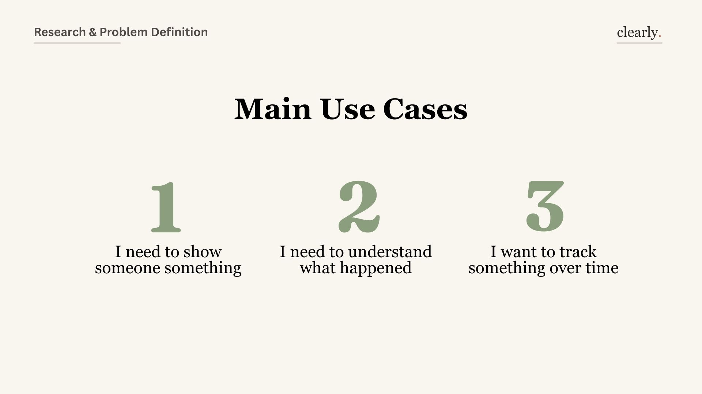
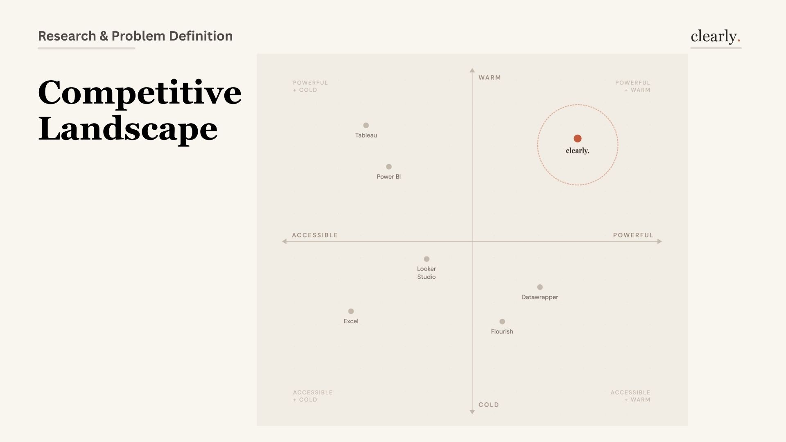
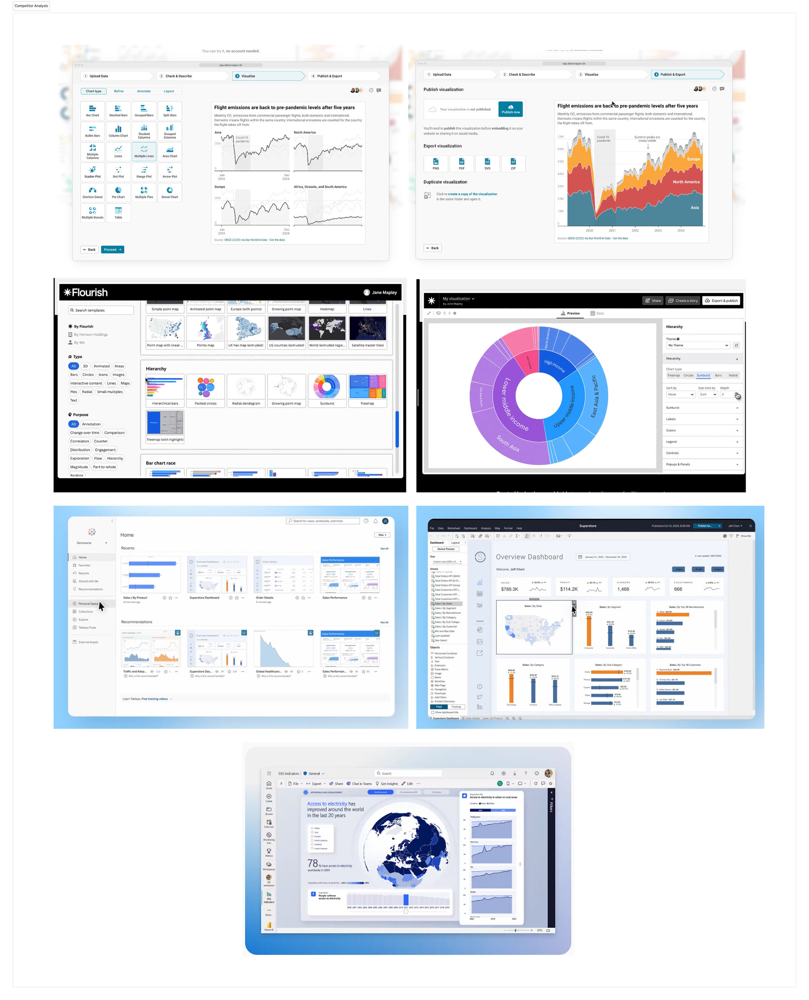
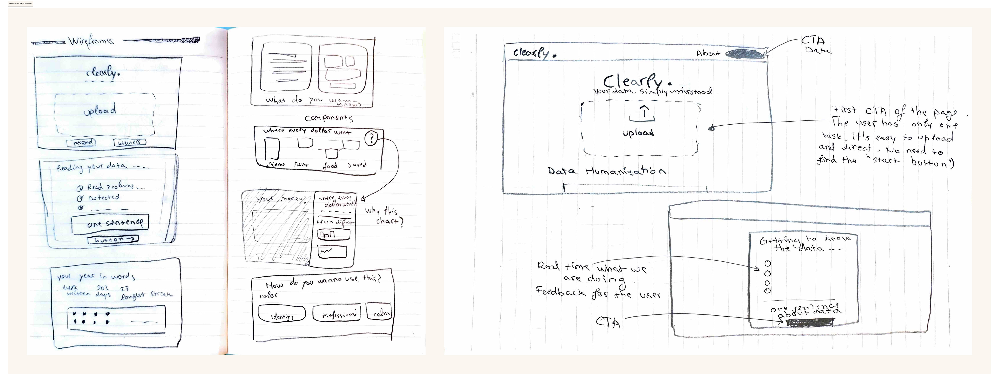
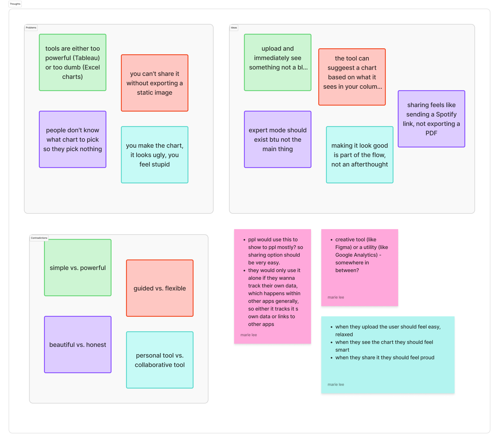

from use cases to competitive positioning

The research surfaced three distinct modes: people who need to show someone something, people who need to understand what just happened, and people tracking a metric over time. Each needs a different kind of guidance — Clearly is designed to detect which mode you're in and adapt.
Design decision: Don't ask users to pick a chart type. Ask what they need to understand. The chart type is an answer, not a starting point.





Questions before charts
Every visualization is an answer to a question. The tool should surface the question first, and the chart will almost pick itself.
The "warm + powerful" gap
No tool occupies the top-right quadrant: powerful enough to be useful, warm enough to feel safe. That's the entire Clearly positioning.
Trust is built progressively
Users don't trust a tool that knows too much. They trust one that shows its work — "we detected 6 columns" builds more confidence than a magic import.